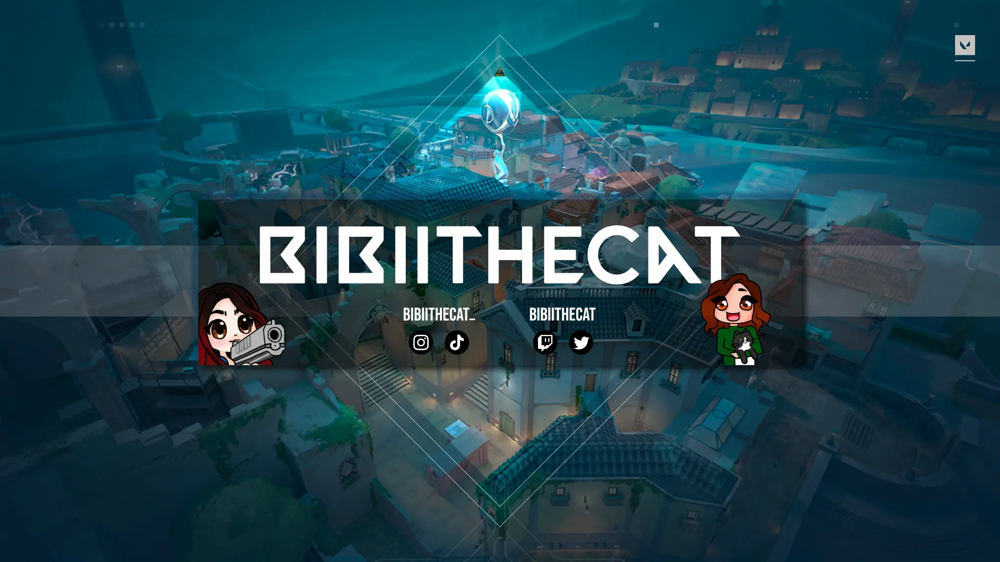

Webdesign &
Digital Ads
Digital gedacht. Klar gestaltet.
Von Webseitenlayouts und responsiven Präsentationen bis zu statischen Digitalbannern: Ich entwickle visuelle Konzepte mit klarer Struktur, durchdachter Gestaltung und einem Blick für die unterschiedlichen digitalen Formate.
Ausgewählte Arbeiten
Webdesign, responsive Layouts und statische digitale Werbemittel.
Webdesign & Layouts
Webseitenkonzepte, Layoutgestaltung und Präsentations-Mockups
8 Motive
Webdesign & Layouts
Webseitenkonzepte, Layoutgestaltung und Präsentations-Mockups


Responsive Design
Layoutdarstellung auf unterschiedlichen Endgeräten
1 Motive
Responsive Design
Layoutdarstellung auf unterschiedlichen Endgeräten

Statische Digital Ads
Digitale Kampagnen, Banner und Präsentationsmotive
8 Motive
Statische Digital Ads
Digitale Kampagnen, Banner und Präsentationsmotive


